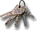
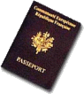
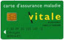

Même si l’un des objectifs de notre tour du monde est de mettre de côté toutes les contraintes de la vie courante pendant un an, la préparation du voyage implique quelques formalités.
Le job
Michaël a eu la possibilité de demander un congé sabbatique dans notre société.
Pour pouvoir prétendre à un congé sabbatique, il faut justifier d’une ancienneté dans l’entreprise d’au moins 36 mois, consécutifs ou non, ainsi que de 6 années d’activité professionnelle. C’est un congé non rémunéré, d’une durée comprise entre 6 et 11 mois, pendant lequel le contrat de travail est suspendu.
A l’issue du congé, le salarié retrouve son emploi précédent ou un emploi similaire avec une rémunération au moins équivalente. Il ne peut pas réintégrer l’entreprise avant l’expiration de son congé, mais il a le droit, par contre, de rompre son contrat de travail sans préavis ni indemnité.
Il faut informer son employeur par lettre recommandée avec avis de réception au moins 3 mois à l’avance en précisant la durée du congé envisagé.
L’employeur doit répondre au salarié par courrier dans les trente jours suivants, sinon l’accord est considéré comme acquis. L’employeur a la possibilité de reporter le congé de 6 mois au maximum et, pour les entreprises de moins de deux cents salariés, le refuser en cas de conséquences préjudiciables à la marche de l’entreprise.
Michaël a pris le maximum autorisé, c’est à dire 11 mois.
Pour Eve-Laure, n’ayant pas l’ancienneté nécessaire pour prétendre à un congé sabbatique, elle a été contrainte de poser sa démission par lettre recommandée avec avis de réception également.
L’appartement

Michaël étant propriétaire de son appartement à Paris, on a décidé de le vendre afin de pouvoir financer une partie de notre voyage. La plus value qu’il a récupérée par rapport à l’achat nous permet de financer aisément notre tour du monde !!
Pour nos meubles, nous avons recherché, dans un premier temps, des garde meubles. Il y en a plusieurs à Paris et en banlieue, notamment : Shurgard Self Stockage, avec plusieurs lieux de stockage en banlieue parisienne (Tel : 01 49 65 99 74) et Access Self Stockage (Tel : 01 43 13 22 00). Mais finalement, nous n’avons pas eu besoin de prendre l’option du garde meuble étant donné que nos parents ont gentiment accepté de prendre nos meubles et nos cartons ! Merci beaucoup, ça nous a bien dépanné !
Il faut aussi penser à résilier tous nos abonnements (magazines, France telecom, Internet, EDF, téléphone portable, assurance pour l’appartement...) et à faire le changement d’adresse chez nos parents !
Les impôts
Il existe deux possibilités. Soit on décide de faire la déclaration par anticipation, même si c’est difficile ! Soit on laisse le soin à nos parents de la faire pendant notre périple.
Les documents

- Passeport valide au moins 6 mois après la date de retour.
- Permis de conduire international : Nous l’avons obtenu auprès de la préfecture de police de Paris par correspondance. C’est gratuit et rapide.
- Visas : Nous allons prendre le visa de l’Inde en France. Pour les autres visas, nous les prendrons au fur et à mesure de notre parcours. Nous établirons celui du Vietnam à Bangkok, celui du Cambodge à la frontière Thaïlande-Cambodge et celui du Laos à Hanoï au Vietnam. Le visa pour l’Australie est un visa électronique (E.T.A.) que nous avons fait établir nous-même sur le site web du gouvernement australien. Pour l’Amérique du Sud, nous n’aurons pas besoin de visa.
- Photos d’identité pour les visas à venir.
- Carte de plongée PADI Open Water.
- Carte des auberges de jeunesse : Nous l’avons obtenue auprès de la Fédération Unie des Auberges de Jeunesse.
- Nous comptons aussi établir :
- les coordonnées des ambassades et consulats français des différents pays traversés
- la liste des médecins recommandables
- les numéros d’appel en PCV
- la liste des adresses des cybercafés des pays.
- les coordonnées de la compagnie d’assistance
- le téléphone de la compagnie d’assurance
- le numéro à 16 chiffres de la carte bancaire
- le téléphone du centre d’opposition
- les coordonnées de notre agence bancaire
- les numéros des Traveller’s Cheques
Nous avons l’intention de photocopier tous nos documents pour en avoir toujours une copie sur nous et en donner à nos proches. Nous allons également scanner les documents (y compris les visas, le carnet de santé...) pour pouvoir les stocker sur Internet au cas où.
L’argent
Nous avons tout d’abord donné une procuration sur nos comptes à nos familles pour qu’ils puissent gérer notre argent pendant notre absence. Nous pourrons également gérer nos comptes à distance via Internet !
Nous préférons partir avec deux types de carte, une VISA Premier (pour avoir un plafond de retrait important) et une MasterCard, ce qui nous permet d’avoir plus de chance de trouver des distributeurs qui les acceptent... Attention à la date d’expiration des cartes de crédit et des abonnements de consultation de comptes bancaires par Internet !!
Nous allons partir avec des Traveller’s checks et des dollars.
La sécurité sociale

A partir du moment où l’on a travaillé, même quelques mois, on est couvert par la Sécurité Sociale pendant 4 ans. Il faut cependant aller chercher, auprès de notre centre, une attestation mentionnant la validité de nos droits sur 4 ans.
Les assurances-assistances demandent que l’on soit affilié à la Sécu pour pouvoir nous assurer (il faut demander la carte Européenne d’Assurance maladie à la Sécu, elle est gratuite et valable un an). Généralement, la garantie de l’assureur intervient en complément des remboursements effectués par la Sécurité Sociale française.
Les assurances
Nous avons payé les billets d’avion avec la carte bancaire VISA Premier, ce qui nous permet de bénéficier d’une bonne assurance.
Par contre, les assurances des cartes bancaires Visa et Mastercard ne nous couvrent que pour une période de 3 mois maximum. Il faut donc prévoir une assurance complémentaire pour le reste du voyage.
Voici quelques liens des principales assistances et assurances. Les différences peuvent être assez importantes en terme de prix mais aussi de prestation.
AVA : Assurance Voyages & Assistance
Courtier spécialisé en Assurance Voyages. Il propose des contrats couvrant les risques auxquels vous pourriez être confrontés lors d’un séjour en France ou à l’étranger.
AVI : L’Assurance Voyage Intégrale
Spécialisé dans l’assurance voyage, ce courtier français propose des contrats valables dans le monde entier visant à couvrir les risques encourus lors d’un périple.
EuropAssistance
L’un de plus grands courtiers européens. Spécialisé dans les contrats d’assurances multirisques pour les voyageurs dans tout le monde.
Mondial Assistance
Ce groupe d’Assurance à l’origine français, est devenu mondial et compte des partenaires dans 168 pays. Il propose également des services destinés aux voyageurs.
April Mobilité (anciennement AIPS)
Ce contrat est normalement réservé aux étudiants mais si nous sommes 10 à souscrire ensemble (10 contrats indépendants avec des dates différentes bien sûr), nous pouvons bénéficier de ce tarif sans être étudiant. Cette offre est réservée aux moins de 31 ans.

Nous avons souscrit un " Plan Marco Polo " chez AVI International (28 et 30, rue de Mogador 75009 Paris. Tél : 01 44 63 51 00) pour 8 mois (les 3 premiers mois étant couverts par la carte bleue). Cette assurance nous a été conseillée par plusieurs voyageurs qui l’ont déjà testée. Apparemment, il est très facile de les contacter de n’importe où en PCV et à n’importe quelle heure.
En cas de souci de santé, nous serons mis en relation avec un médecin français qui pourra nous rassurer et entrer en contact avec les médecins locaux.
Pour les adhérants à ABM, il y a une réduction de 10 %.
Attention, la plupart de ces assurances, dont AVI ne couvre pas les frais d’hospitalisation en France suite à un rapatriement.